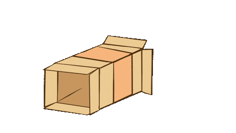

Gnarp Gnorp Glorp? Gnorp Glorp Gnarp Glarpy Glorp Gnarp Gnorp Gnorp Gnorp Glorp Gnarp Glarpy Glorp Gnarp Gnorp Gnorp Gnorp Glorp Gnarp Glarpy Glorp Gnarp Gnorp Gnorp Gnorp Glorp Gnarp Glarpy Glorp Gnarp Gnorp Gnorp Gnorp Glorp Gnarp Glarpy Glorp Gnarp Gnorp Gnorp Gnorp Glorp Gnarp Glarpy Glorp Gnarp Gnorp Gnorp